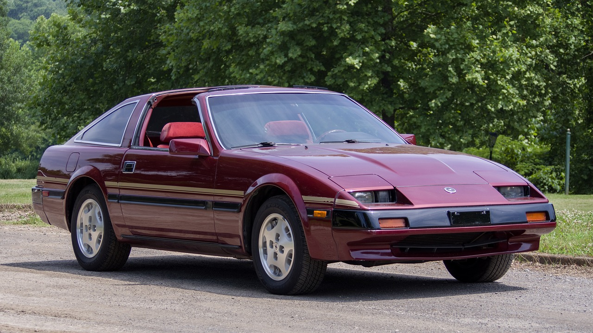

"Datsun Fairlady Sports 1600 (SPL311) 1959-1970 "
Despite this not being the ORIGINAL Fairlady, it's the same design and popularized fairlady the state's recieved. An Inline 4, 1.6 liter roadster, affectionately named the "Fairlady" after "My fair lady", a broadway show that touched the heart of Nissan's previous president, Mr. Kamawata.

"Datsun 240Z (S30) 1969-1978"
This was the first "Fairlady Z", and it is about as famous as a vehicle can get. In the states, our cars were given names by their engine sizes, so you'll notice each year model becomes a higher displacement from the last. The 240 Z was a classic Japanese roadster, sporting an incredbile 2.4L inline 6, the L24. These cars are idolized for their obvious good looks, and are about as "muscle" as a Japanese car can be.

"Datsun 280ZX (S130) 1978-1983"
The infamous 280ZX. Following the pain and suffering of the 80s, Datsun too had to make some difficult decisions. This car was developed, with all the right ingredients! Other than it's overall ugly styling. Datsun's first sportscar to feature Electronic Fuel Injection, the 280Z recieved the X to express the Luxury these cars provide. This marked Datsun's pivot, from Sport/Race cars to a broader market of GT (Grand Touring) cars!. The Cushy leather seats, Digital Dash, and Factory Turbocharged L28 gave this car an incredible kick, and despite it's lacking looks, they sold very well!

"Datsun 300ZX (Z31) 1984-1989"
Datsun's shot in the dark. The 300ZX, rocking Japan's first V6! From 1984 to 1989 this Fairlady dominated the Japanese sports touring market. This 80s daydream featured one of the earliest voice assistants, and the Z31 community dearly refers to her as "B*#!%ing Betty", as the security sensors are known to go bad and cause her to endlessly remind you to shut your door. This revolutionary car flaunted it's pop-up headlights and aggressive lines like none other.
